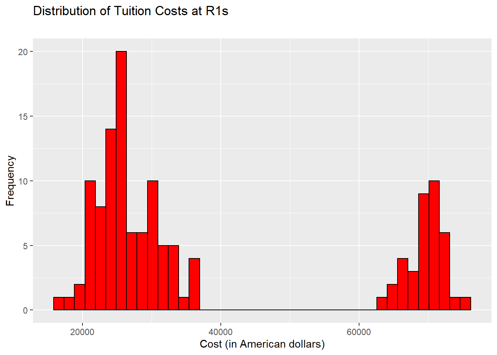
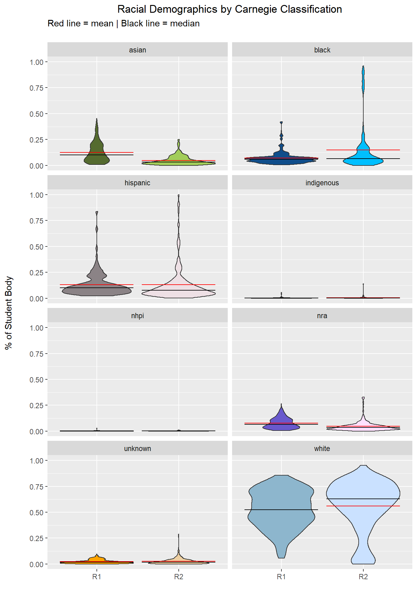
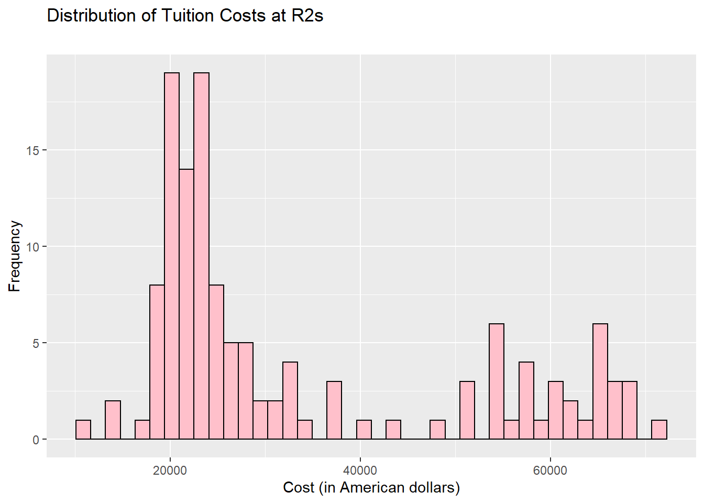
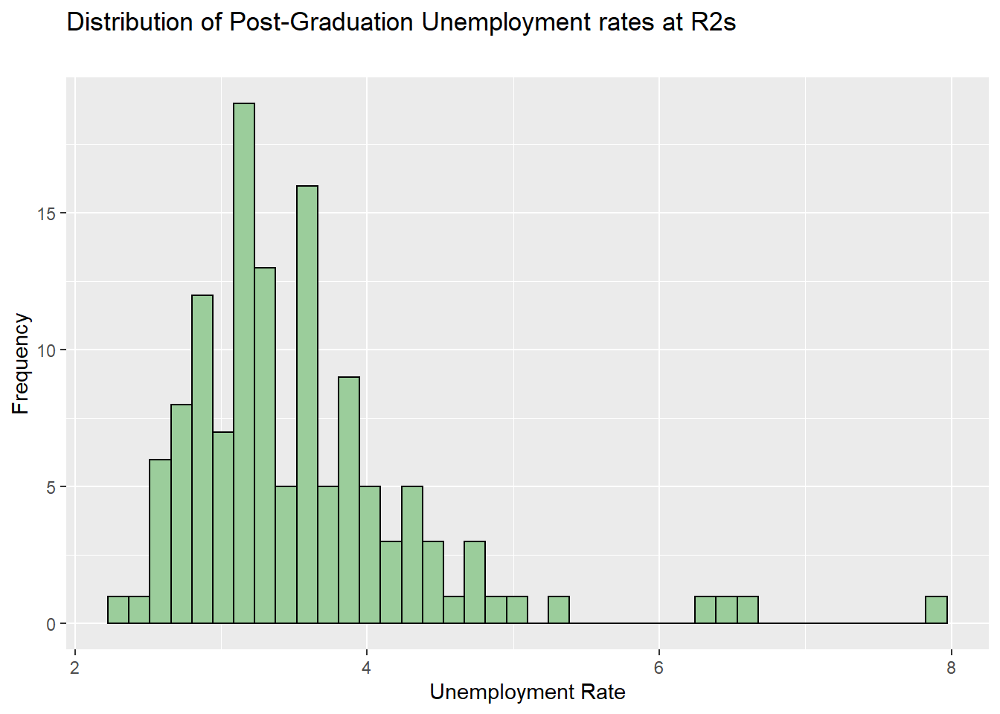

Section 5 Methods and Results
5.1 Methods
- Sample.
- The sample for this study consisted of universities in the United States of America. In this way, we were able to examine what was nearly the population of college students in America. However, the high frequency of NA variables in some categories hindered
- Procedure.
- The data was collected by accessing the public College Scorecard API. The procedure for extracting and cleaning the data is explained in the Data Extraction and Data Clean sections.
- Analysis Strategy.
- We quantified student outcomes using the median debt and unemployment rate variables. These variables were selected because they are tangibly related to financial outcomes. Other potential measures of success in the data, such as completion rates and death rates, contained either very sparse data or were ambiguous. For instance, neither transferring nor withdrawing from a University are necessarily indicative of a poor outcome (insofar as it relates to student success after attending the University). Both debt and unemployment, however, are. High rates of debt implicate a school with insufficient financial aid programs. High debt medians also potentially imply student’s are not placed into high-paying jobs that would allow them to expediently repay their debt. High rates of unemployment suggest that students have trouble finding jobs after graduation. As the goal of a university education is largely to educate a student to assist with their career, students being unable to find jobs is a poor outcome.
The demographic variables were selected by inspecting all the demographic variables in the dataset and selecting the ones that were mostly complete. We decided to look at the demographic makeup of R1 and R2 universities to determine if there was a significant difference between the student body profiles. Race and gender are often discussed in relation to student success, due to a history of systematic discrimination within the American university system. These were our primary variables of interest. Specifically, we were interested in the ratio of White students to minority students. However, we briefly examined veteran and first generation status.
5.2 Results
SET-UP
# IMPORTING PACKAGES
library(moments)
library(dplyr)
library(tidyr)
library(stats)
library(sjstats)
library(ggplot2)
library(plotly)
library(tidyverse)
library(purrr)
library(RColorBrewer)
library(tmap)# READING IN THE CSVs
fin <- read.csv('Proj1Data/cleanFinancials1519.csv')
dem <- read.csv('Proj1Data/cleanDemographics1519.csv')
fin$r_status <- factor(fin$r_status, levels = c("R1", "R2"), labels = c(1,2))
dem$r_status <- factor(dem$r_status, levels = c("R1", "R2"), labels = c(1,2))
# TRANSFORMING THE DATASETS
finR <- fin[fin$year == "latest",]
finR1 <- fin[fin$r_status == 1 & fin$year == "latest",]
finR2 <- fin[fin$r_status == 2 & fin$year == "latest",]
demR <- dem[dem$year == "latest",]
demR1 <- dem[dem$r_status == 1 & dem$year == "latest",]
demR2 <- dem[dem$r_status == 2 & dem$year == "latest",]
finR <- subset(finR, university %in% demR$university)5.2.1 Demographic Descriptive Statistics
LOCATION OF R1’S vs. R2’S
Before analyzing the demographic differences, we thought it was important to display how R1 and R2 schools are distributed across the United States. The demographic makeup of a school is potentially influenced by the demographics of in-state students which, at least at public institutions, are proportionally more likely to attend the school than students from any other state (see State Council of Higher Education for Virginia, 2019 for a case study of one state). Although we do not factor state and baseline state demographics into our model, it is a potential influential third variable that should be kept in mind while interpretting race and income demographics.
r1_state <- cdem %>%
filter(r_status == "R1") %>%
group_by(state) %>%
distinct(university) %>%
count()
r2_state <- cdem %>%
filter(r_status == "R2") %>%
group_by(state) %>%
distinct(university) %>%
count()g <- list(
scope = 'usa',
projection = list(type = 'albers usa'),
lakecolor = toRGB('white')
)
r1_map <- plot_geo() %>%
add_trace(
z = ~r1_state$n,
span = I(1),
colorscale = 'Portland',
zauto = F,
zmax = 10,
zmin = 1,
locations = r1_state$state,
locationmode = 'USA-states'
) %>%
colorbar(title = "# of Schools") %>%
layout(geo = g, title = "Number of R1 Schools per State")
r2_map <- plot_geo() %>%
add_trace(
z = ~r2_state$n,
span = I(1),
colorscale = 'Portland',
zauto = F,
zmax = 10,
zmin = 1,
locations = r2_state$state,
locationmode = 'USA-states'
) %>%
colorbar(title = "# of Schools") %>%
layout(geo = g, title = "Number of R2 Schools per State")
r1_mapRACE
The prelimary examination of the demographics data revealed that all of the race values, except for the proportion of white students, had a significant right skew. While the distributions are not normal, they are symmetric and bounded, which prevents extreme outliers. Below we provide a violin plot showing the distribution for each of the race variables grouped by their Carnegie classification. The mean is marked by a red bar, and the median is marked by a black bar.
dem_pal <- c("darkolivegreen", "darkolivegreen3", "dodgerblue4", "deepskyblue", "lavenderblush4", "lavenderblush2", "palevioletred1", "rosybrown1", "tomato2", "sienna 1", "slateblue3", "thistle1", "orange", "navajowhite2", "lightskyblue3", "lightsteelblue1")
race_demographics <- cdem %>%
select(university, r_status, white, black, hispanic, asian, indigenous, nhpi, nra, unknown) %>%
gather("race", "percentage", 3:10, -university)
race_demographics %>%
ggplot(aes(x = factor(r_status), y = percentage, fill = interaction(r_status, race))) +
geom_violin() +
stat_summary(fun=mean, geom="crossbar", linetype = 1, size=.2, color = "red") +
stat_summary(fun=median, geom="crossbar", linetype = 1, size=.2, color = "black") +
labs(title = "Racial Demographics by Carnegie Classification",
subtitle = "Red line = mean | Black line = median\n",
x = " ",
y = "% of Student Body") +
facet_wrap(~as.factor(race), nrow = 5) +
scale_fill_manual(values = dem_pal) +
theme_gray() +
theme(axis.title.y = element_text(margin = margin(t = 0, r = 20, b = 0, l = 0)),
plot.title = element_text(hjust = .5),
legend.position = "none")The five number summary for the ‘white variable’, along with the skewness and kurtosis, are reported below.
## Min. 1st Qu. Median Mean 3rd Qu. Max.
## 0.0573 0.3900 0.5072 0.5129 0.6763 0.8408## [1] -0.2433317## [1] 2.272319## Min. 1st Qu. Median Mean 3rd Qu. Max.
## 0.0000 0.4507 0.6242 0.5529 0.7326 0.9348## [1] -0.9043165## [1] 2.917131OTHER DEMOGRAPHICS
The non-racial variables (i.e., gender, first generation status, veteran status) did not posess the same skew. However, the mean was inflated due to how we coded NA’s resulting in peculiar looking violin plots.
#Demographics for sparse columns
other_demographics <- cdem %>%
select(university, r_status, female, first_gen, veteran) %>%
gather("demographic", "percentage", 3:5, -university)
other_plot <- other_demographics %>%
ggplot(aes(x = factor(r_status), y = percentage, fill = interaction(r_status, demographic))) +
geom_violin() +
stat_summary(fun=mean, geom="crossbar", linetype = 2, size=.1, color = "red") +
labs(title = "Other Demographic Factors by Carnegie Classification",
subtitle = "",
x = " ",
y = "% of Student Body") +
facet_wrap(~as.factor(demographic), nrow = 5) +
scale_fill_brewer("Paired") +
theme_gray() +
theme(axis.title.y = element_text(margin = margin(t = 0, r = 20, b = 0, l = 0)),
plot.title = element_text(hjust = .5),
legend.position = "none")
other_plot
5.2.2 Financial Descriptive Statistics
The code for the first histogram is displayed, the rest will be hidden to avoid unnecessary repitition.
## [1] "Tuition cost"## Min. 1st Qu. Median Mean 3rd Qu. Max. NA's
## 16927 24464 28408 38695 66923 75735 1cost_hist1 <- ggplot(finR1, aes(x =costt4_a)) +
geom_histogram(bins = 40, color = "black", fill = "red") +
labs(title = "Distribution of Tuition Costs at R1s",
subtitle = "",
x = "Cost (in American dollars)",
y = "Frequency")
cost_hist1
## Min. 1st Qu. Median Mean 3rd Qu. Max. NA's
## 11299 21266 24098 33613 51214 71875 4
## [1] "Student debt"## Min. 1st Qu. Median Mean 3rd Qu. Max.
## 8700 17634 20000 19652 22027 27000
## Min. 1st Qu. Median Mean 3rd Qu. Max. NA's
## 5500 20930 23167 22719 25000 30500 5
Unemployment
## [1] "Unemployment Rate"## Min. 1st Qu. Median Mean 3rd Qu. Max.
## 2.190 2.965 3.200 3.293 3.605 5.020unemp_hist1 <- ggplot(finR1, aes(x = unemp_rate)) +
geom_histogram(bins = 40, color = "black", fill = "darkseagreen4") +
labs(title = "Distribution of Post-Graduation Unemployment rates at R1s",
subtitle = "",
x = "Unemployment Rate",
y = "Frequency")
unemp_hist1
## Min. 1st Qu. Median Mean 3rd Qu. Max. NA's
## 2.320 3.040 3.360 3.545 3.900 7.920 6unemp_hist2 <- ggplot(finR2, aes(x = unemp_rate)) +
geom_histogram(bins = 40, color = "black", fill = "darkseagreen3") +
labs(title = "Distribution of Post-Graduation Unemployment rates at R2s",
subtitle = "",
x = "Unemployment Rate",
y = "Frequency")
unemp_hist2
5.2.3 Significance Testing
Preliminary normality analysis of the median graduate debt distribution revealed levels of skewness that forbade the use of parametric comparison tests. A Wilcoxon signed-rank test was conducted in order to investigate the differences in median graduate debt between R1 and R2 institutions. Results indicate that median graduate debt significantly differed between R1 and R2 institutions (W = 982, p < 0.01). While a difference in student debt was expected due to the aforementioned price of R1 institution tuition, descriptive statistics revealed graduates of R1 institutions graduated with less average debt (M = 19,652, SD = 3,750) than students from R2 institutions (M = 22,719, SD = 3,785).
##
## Wilcoxon rank sum test with continuity correction
##
## data: finR$grad_debt_mdn by finR$r_status
## W = 4430.5, p-value = 2.092e-11
## alternative hypothesis: true location shift is not equal to 0In order to further explore student outcomes, the investigators turned their attention to the graduate unemployment rate. The distribution for unemployment exhibited skewness and kurtosis values within acceptable bounds so a Welch’s two-sample t-test was conducted in order to find whether there were significant differences in unemployment rates between R1 and R2 graduates. The test revealed significant differences in rates of unemployment between R1 and R2 graduates t(118.36) = -2.6055, p = 0.01, 95%C.I. [-0.44, -0.06]. On average, the unemployment rate for R1 graduates (M = 3.293, SD = 0.51) was lower than that observed for R2 graduates (M = 3.545, SD = 0.83)
##
## Welch Two Sample t-test
##
## data: finR$unemp_rate by finR$r_status
## t = -2.7918, df = 208.77, p-value = 0.005728
## alternative hypothesis: true difference in means is not equal to 0
## 95 percent confidence interval:
## -0.41446370 -0.07138832
## sample estimates:
## mean in group 1 mean in group 2
## 3.292901 3.5358275.2.4 Regression model
The racial diversity proportion of an institution was examined as a potential moderator of the relationship between institution type (R1 vs. R2) and unemployment rate. In the first step of the regression analysis institution type was entered into the model and accounted for 5% of the variance in unemployment rate, which was significant, R2= 0.52, F(1,122) = 6.82, p = 0.01. In the second step of the regression analysis the interaction effect between institution type and racial diversity proportion were entered into the model and explained an additional 4% of the variance in unemployment rate, which was significant, R2= 0.04, F(1,121) = 8.57, p < 0.05. Racial diversity proportion was entered into the model last and accounted for 24% of the variance in unemployment rate, which was significant, R2= 0.24, F(1,122) = 38.8 , p < 0.01. Thus, racial diversity proportion was a significant moderator of the relationship between institution type and unemployment rate.
Model step 1
Model step 2
Model step 3
predictor <- as.integer(finR$r_status)
moderator <- demR$white
interaction <- predictor * moderator
outcome <- finR$unemp_rate
interactionlm <- lm(formula = outcome ~ interaction)Complete model